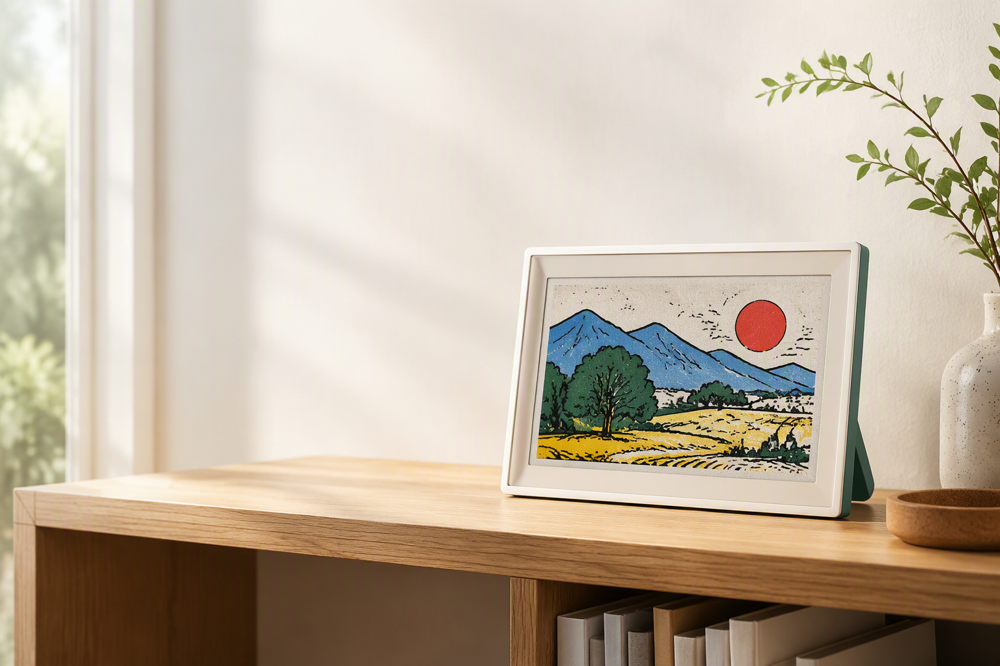
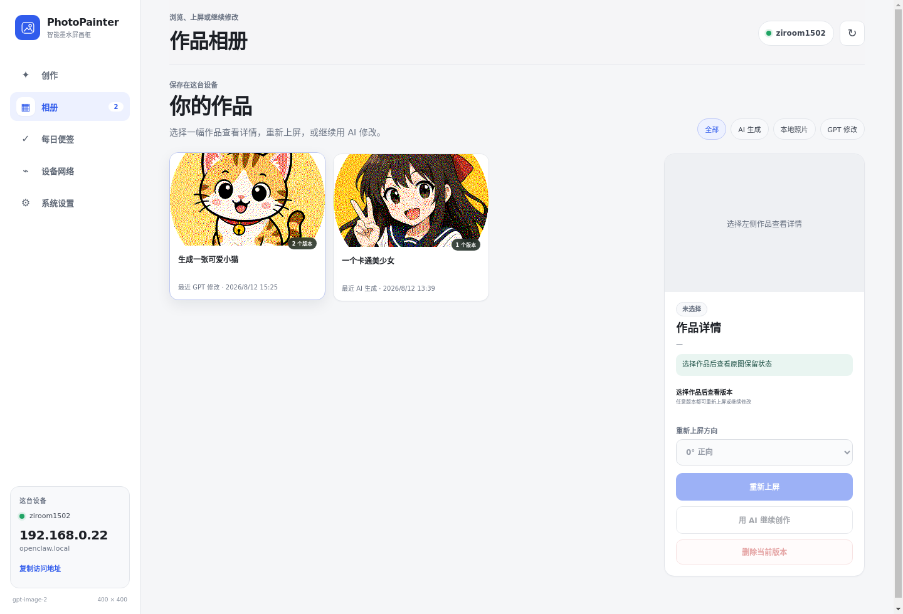
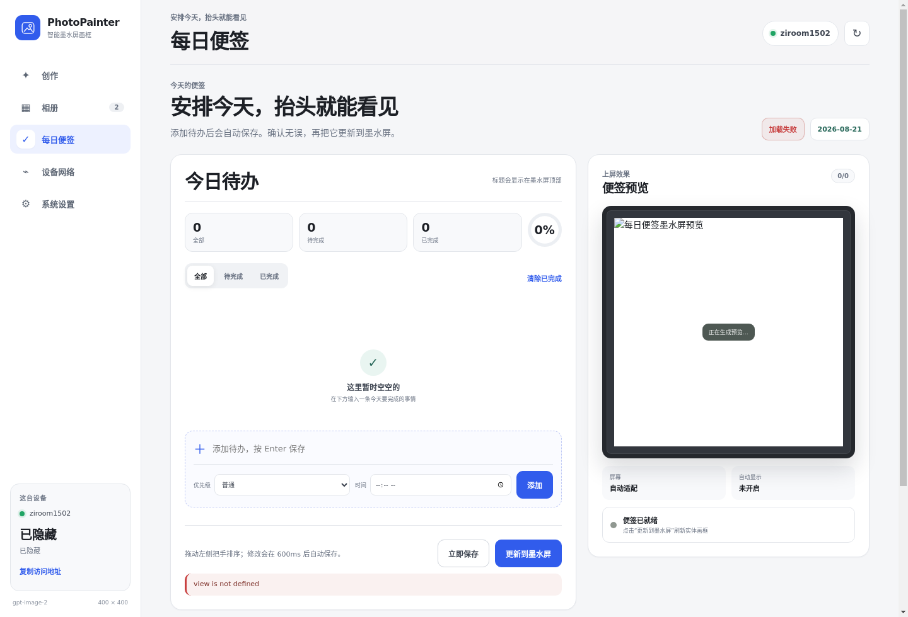
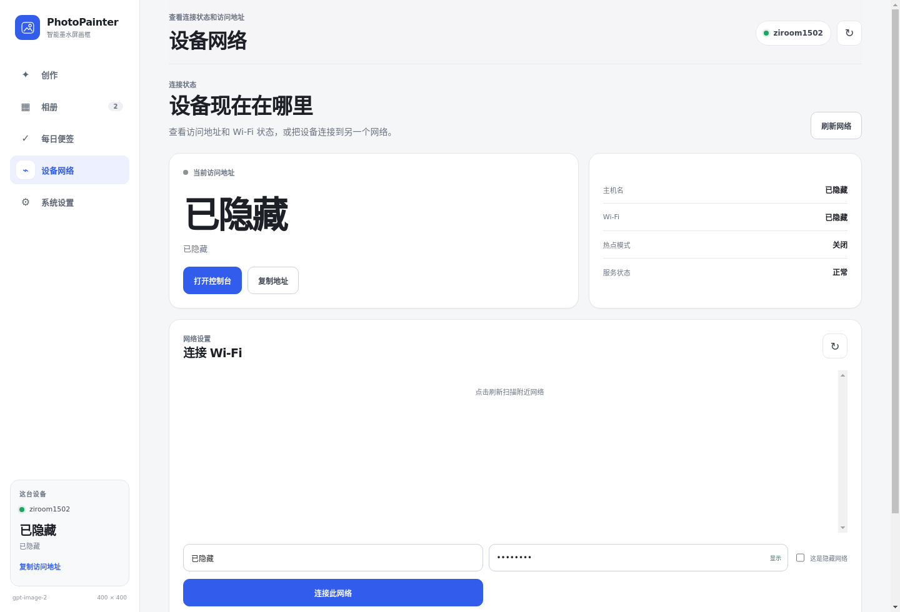
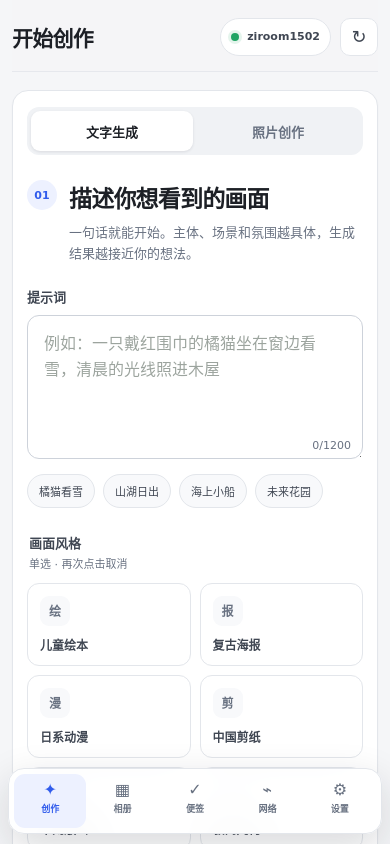
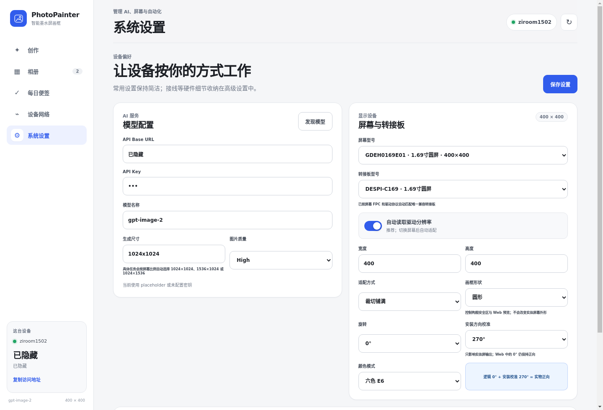

创作工作台
在发送之前，
先看见真实的颜色。
- 照片导入与 AI 重绘
- 8 种创作风格
- 六色像素级预览
- 圆形 / 矩形安全区

相册里有成千上万张照片，却很少有一张被真正看见。传统相框持续发光，打印又把选择凝固在一次。
我们想做一种更安静的媒介：像纸一样融入空间，又可以随时换上一段新的记忆。电子纸画面无需持续刷新或背光；控制设备运行时仍需供电。
导入照片、挑选风格、预览六色效果，再送到屏幕。整个流程都在熟悉的中文 Web 界面里完成。
选择一张你真正喜欢的照片。
用 8 种风格重绘，或保留原貌。
在圆形或矩形安全区内检查构图。
六色预览确认后，送往电子纸。
以下均为实际软件生成的原图与 400 × 400 六色屏幕输出文件，用于刷新前预览；不是实体屏幕拍摄效果。
01 / 03
创作工作台

本地作品库

每日便签
无键盘初次设置


当前原型围绕 Raspberry Pi 与 Good Display Spectra 6 电子纸构建。你可以选择屏幕与转接板、可视化编辑 GPIO 接线，并通过安装旋转校准让画面落在正确方向。
CURRENT REFERENCE BUILD

兼容方向
PhotoPainter 的 Web 界面、图像预处理、作品管理与设备控制在设备端运行。模型服务由你配置，数据边界清晰可见。
PhotoPainter 目前是可运行的工程原型，而不是已经量产的商品。我们正在验证更多屏幕、整理安装体验，并为未来的开放做好准备。
中文 Web 创作、六色预览、本地作品库与屏幕显示。
Pi 4 + 1.69 英寸圆形 Spectra 6 组合运行验证。
多尺寸 E6 屏幕、适配板、配网与安装校准持续测试。
规格、支持范围与项目仓库将在开源准备完成后公布。
还不可以。当前是众筹前展示阶段，产品仍处于工程原型与兼容性验证中，尚未公布价格、交付时间或销售计划。
它是当前参考组合。项目也面向 1.54、3.7、4.0 与 7.3 英寸等多种 E6 电子纸及适配板进行支持，但不同组合仍需验证。
作品管理与设备控制以本地优先为方向。AI 是否联网取决于你自行选择和配置的模型服务；界面会让配置路径保持清晰。
我们正在整理开放计划。项目仓库将在开源准备完成后公布，目前不会提前链接未经整理的开发仓库。
本页不收集邮箱或个人数据。请收藏本页面，重要的硬件验证与众筹准备节点会在进度区持续更新。
一张照片，不该只被看见一次。